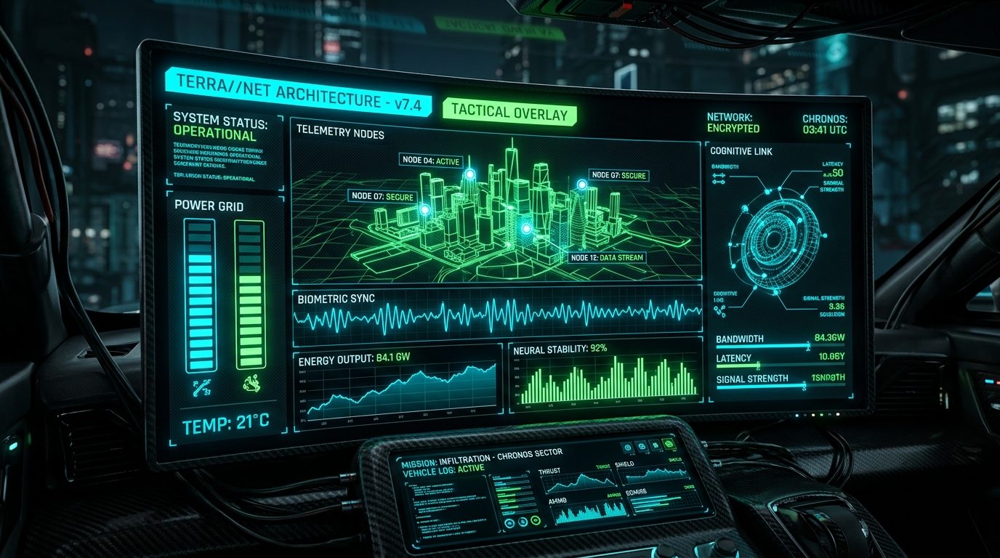

HUD & DASHBOARDS // WEBGL
TERRA//NET TACTICAL HUD
Dashboard de telemetría geoespacial con renderizado de nodos 3D en tiempo real, monitoreo de ancho de banda y enlaces cognitivos.
FPS
60.0
RENDER
2.4ms
SEGURIDAD
A+